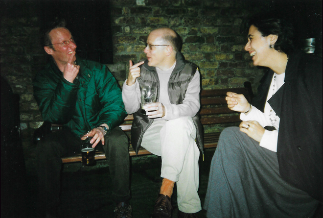
A weekend in Dublin to celebrate the 50th birthday of our friend Marion Hayward with David Granger, David Collins, Gerry Gracias, Stephen Metcalfe, Martin Grocott and Sandra Rainsford plus David's friend ('John from Dublin') and Seán and myself. Our first evening found us in a local bar imbibing the local Liffey water ...
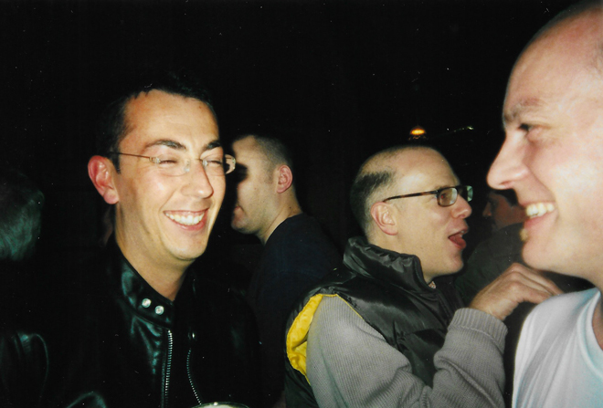
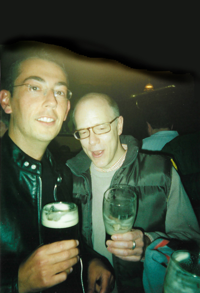
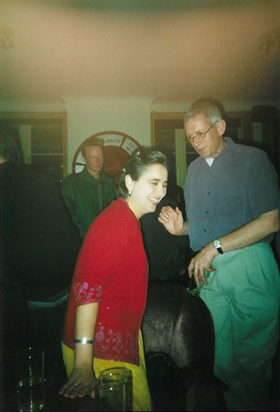
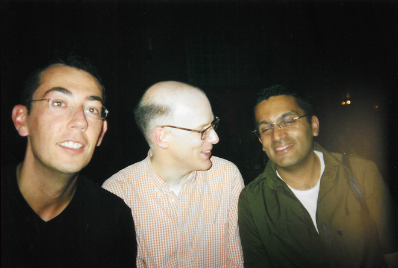
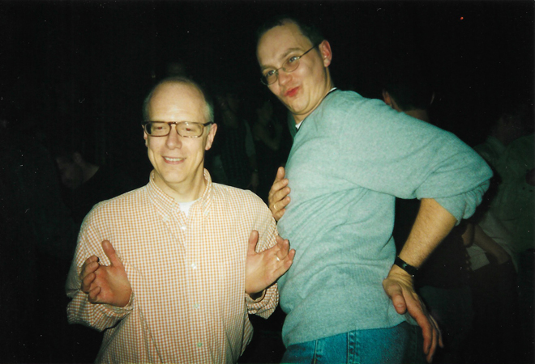
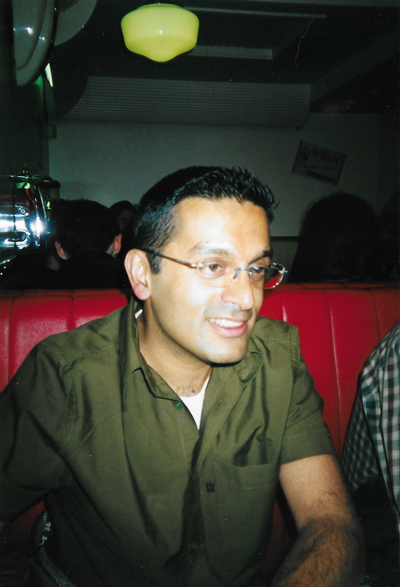
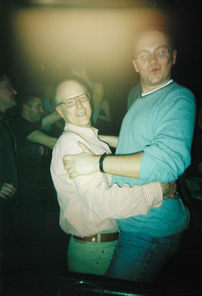
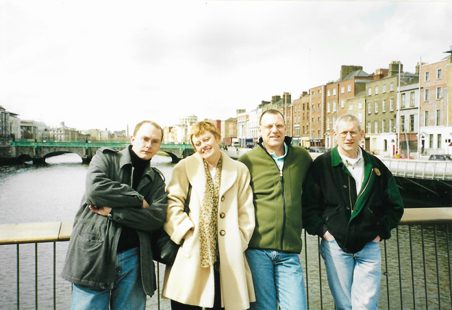
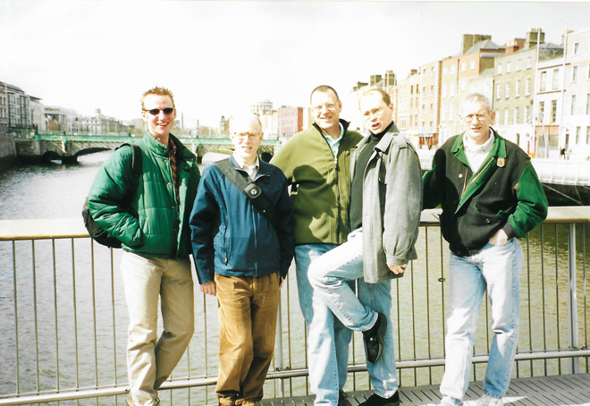
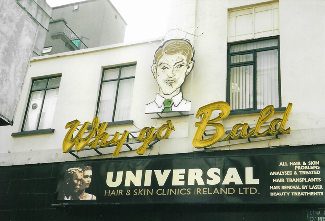
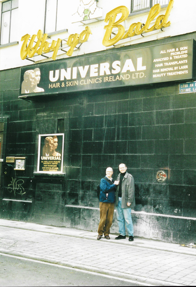
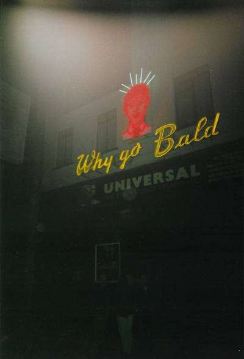
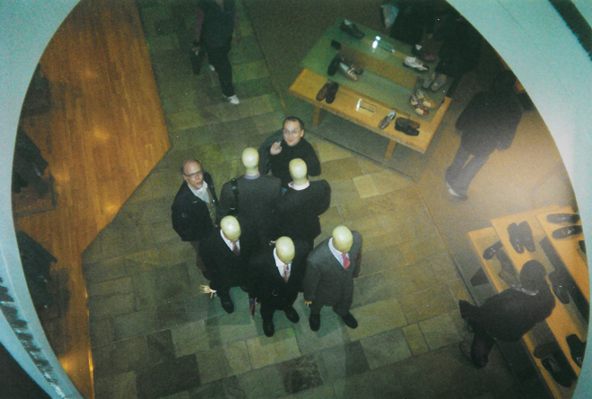
We found a splendidly-named tea shop for Marion - and then I went off to find a bit of 'culture' and found it in Trinity College Library with Ireland’s most prized artifact, the Book of Kells which is an illuminated 680-page version of the four Gospels written in Latin. The 9th century manuscript was composed by monks on vellum and was magnificent to see 'in the flesh'.
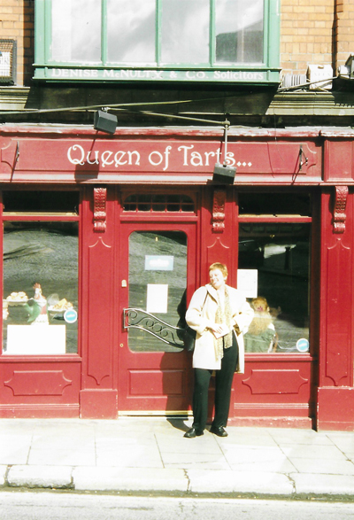
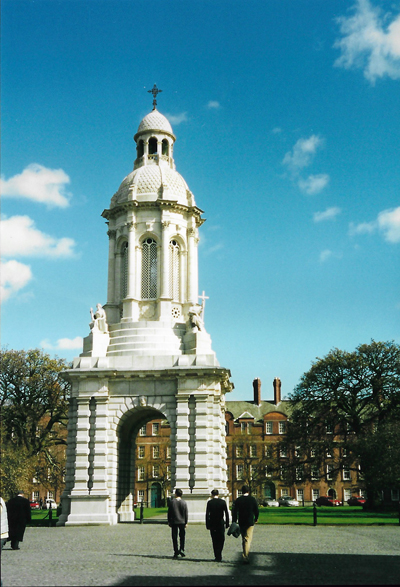
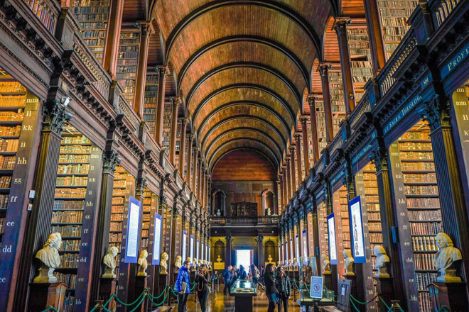
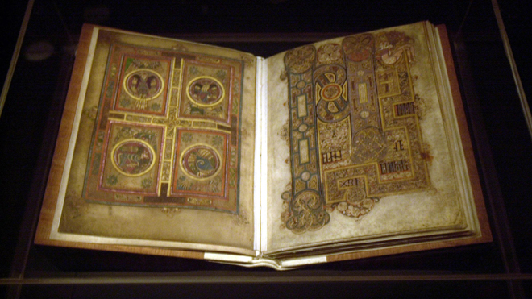
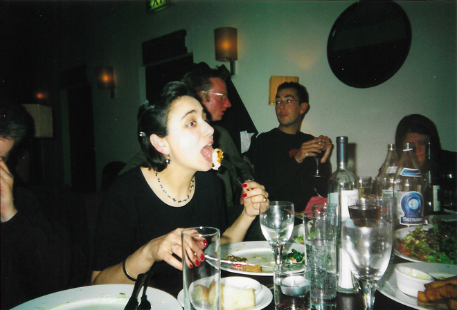
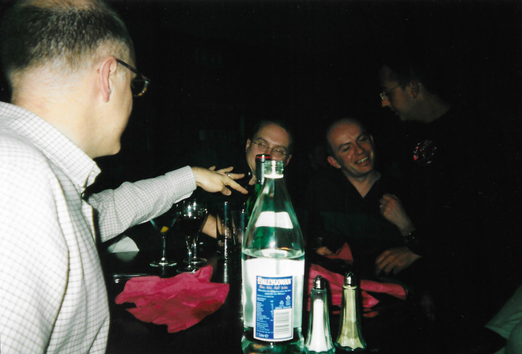
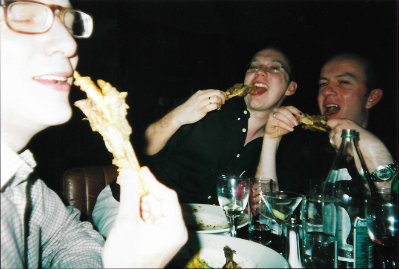
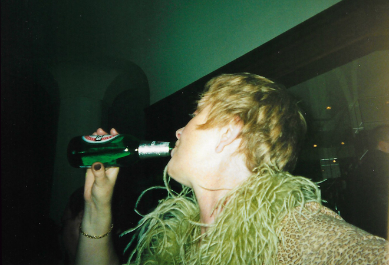
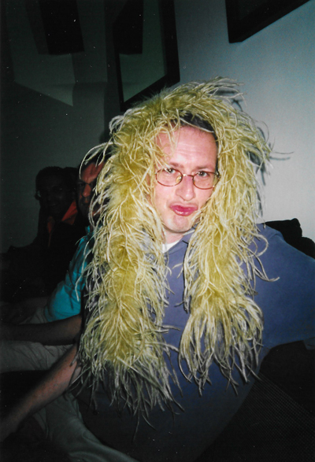
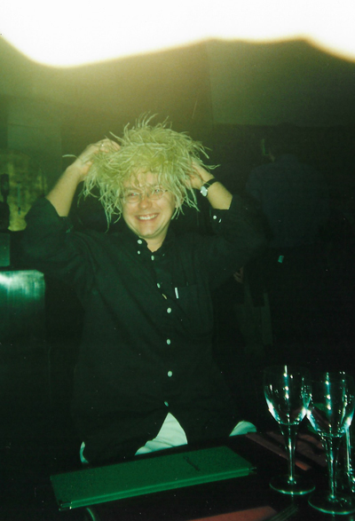
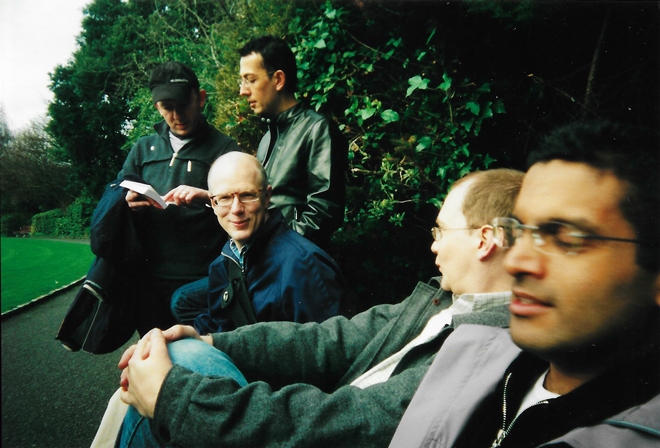
On our final morning, we visited the Oscar Wilde Memorial Sculpture (unveiled in 1997) in Merrion Square, pausing briefly to pose in front of the large fountain in the park.
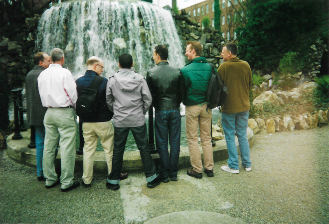
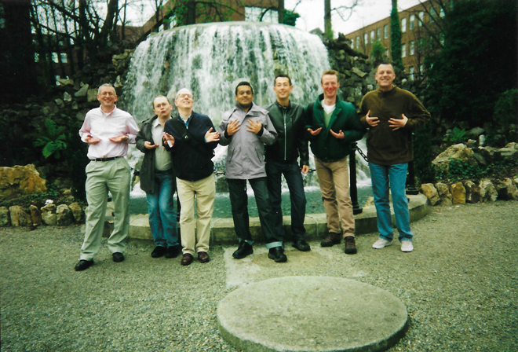
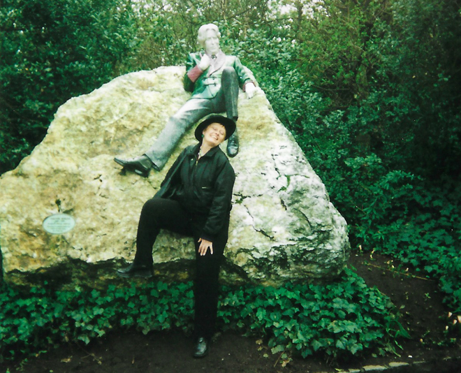